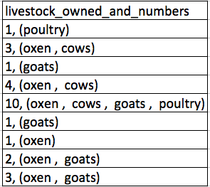

Learning goals
Lesson objectives
- Describe the process of reverse instructional design
- Explain the levels of Bloom’s taxonomy
- Apply Bloom’s taxonomy to craft learning objectives for lesson
- Describe strategies for assessing learning goals for just-in-time feedback
Overview
When sitting down to plan a class, I think we have all been in the mindset of diving right into reviewing the content, questioning our understanding, and anticipating questions that students might have. While it is good to prepare your content, this approach can take you down extended rabbit-holes in which you anticipate and questions that only an expert (like yourself) would think to ask, and never get around to thinking about how to get your students from one point to the next, and how to know when they’ve gotten there. In this session, we will focus on strategies for designing content to achieve specific learning outcomes.
Reflection
Exercise
Last week we focused on developing skill, the limits of memory, and how learning works. What areas would you like more clarification on? What areas are you excited to apply in your classroom?
Reverse instructional design
When writing curriculum, it is easy to allow content objectives to distract from learning objectives. One way to prevent this is to take a “reverse” approach to instruction, that keeps the focus firmly on learning outcomes. This is sometimes also referred to as “backwards design.” The order of preparation in this case becomes:
- Determine your learning objectives
- Decide what constitutes evidence that objectives have been met, and design assessments to target that evidence
- Design instruction: Sort assessments in order of increasing complexity, and write content that connects everything together
Working With Learning Objectives
So how to we actually go about determining learning objectives? Before we go into that, we’ll take a moment to consider one framework for thinking about the learning process and developing material to accomplish learning objectives.
Bloom’s Taxonomy is a framework for thinking about learning that breaks progress down into discrete, hierarchical steps. While many ideas have come and gone in education, Bloom’s has remained a useful tool (although I suspect some of you might be groaning at this point). It remains useful because the hierarchy seems to be reasonably valid: outcomes at the top of the hierarchy cannot be achieved without mastery of outcomes at the bottom. In the long term, everybody wants to be at the top. However, in aiming to meet students where they are, we also need to be mindful about helping them to “grow a level,” helping them to recognize when they have achieved that growth, and guiding them to look ahead to where we might not be able to take them.

When thinking about learning objectives for our purposes, we are going to focus on a fairly atomic level. That is, thinking about objectives for a class session or two. These will necessarily be different from objectives you would write for an entire course. I find it easiest to look at examples of learning objectives. Here are two lists of objectives. The first is from a lesson on data visualization in R.
- Produce scatter plots, boxplots, and time series plots using ggplot.
- Set universal plot settings.
- Describe what faceting is and apply faceting in ggplot (ggplot is a package in R used to create plots).
- Modify the aesthetics of an existing ggplot plot (including axis labels and color).
- Build complex and customized plots from data in a data frame.
One important thing to note is that they are all starting with a verb, as they describe something a student should be able to accomplish after the lesson.
Exercise
Consider the five learning objectives we saw above:
- Produce scatter plots, boxplots, and time series plots using ggplot.
- Set universal plot settings.
- Describe what faceting is and apply faceting in ggplot (ggplot is a package in R used to create plots).
- Modify the aesthetics of an existing ggplot plot (including axis labels and color).
- Build complex and customized plots from data in a data frame.
Where would you place them in the pyramid of Bloom’s taxonomy?
We also want to make sure that learning objectives are something we can actually assess. Sometimes we might write vague learning objectives that we have a difficult time telling if students can do the thing we expect them to. For example, the following learning objective comes from a lesson on using spreadsheets:
- Understand how to organize data so computers can make the best use of the data
While this understanding is important, it may not be immediately obvious how to tell if a student learned the material. In contrast, specific objectives will be easier to write assessments for:
- Recognize and resolve common spreadsheet formatting problems.
- Describe the importance of metadata.
- Identify metadata that should be included with a dataset.
- Apply consistent date formats
- Use formulas to separate dates into their component values (e.g. Month, Day, Year).
For example, after teaching content to address the first point (common spreadsheet formatting problems), we could ask students to provide a better organization to these data:

Exercise
Think about a tool (software or otherwise) that you use or teach often. If you were to write a lesson to train students how to use that tool, what are three learning objectives that would help guide the development of your lesson? Write the tool or analysis and your learning objectives in the collaborative document.
Exercise
Consider the learning objectives you wrote above and create an assessment like the ones we described previously (multiple choice questions, faded examples, Parson’s problems, or diagram labeling). After creating this assessment, explain how you expect it to reinforce what you taught and/or identify misconceptions students may have.
Checking in
When a learning objective has been met, everyone should know about it! You, as an instructor, can be satisfied that your teaching has successfully translated into learning. For students, recognizing that they have successfully learned something is motivating and it also supports their ability to monitor their own progress - this awareness, or metacognition, is especially key to supporting continued learning beyond the classroom. However, not all lessons have checkpoints built in where such progress is made clear. Where they do, they can pass unnoticed in the absence of focused recognition.
Instructors should use a formative assessment ideally every 5 minutes and at least every 10-15 minutes in order to make sure that the class is actually learning. Since the average attention span is usually only this long, formative assessments also help break up instructional time and re-focus attention. Formative assessments can also be used preemptively: if you start a class with a question and everyone can answer it correctly, then you can safely skip the part of the lecture in which you were going to explain something that your students already know.
Exercise
How have you “checked in” with your students during class to see where they are in their learning progress?
Avoiding “Do you understand?”
Students are often reluctant to admit when they do not understand. Furthermore, self-assessments of skill in the absence of formative assessment are often inaccurate because of the Dunning-Kruger effect: the less people know about a subject, the less accurate their estimate of their knowledge is. Therefore, if you ask a room full of people “Do you understand?” the result will invariably be a number of “yes” responses (many of them inaccurate) which tend to drown out a variable amount of silence. Instead, a targeted formative assessment takes the inaccuracy and stress of self-judgement away and demonstrates to all whether the students’ level of understanding has met the instructor’s goal.
Sticky Notes
So how you do you assess students’ progress without asking? One way is to ask for quick check-ins. If you are teaching in-person, you can start the class by handing out two sticky notes to each student, say one red one and one green one. These can act as “flags” that students can place on the back of their laptop screens to indicate when they need help (say, the red note) or when they have completed a task and are ready to move on (the green note). These are useful because:
- it is more discreet (which means they are more likely to actually do it),
- they can keep working while their flag is raised, and
- the instructor can quickly see from the front of the room what state the class is in.
Active and frequent requests are most effective in getting students to actually use these well (e.g. “please put up a green sticky note if you completed the last step, and a red sticky note if you need help.”). Also, I have used “red” and “green” because those colors carry certain connotations, but you should consider other colors that are easier to differentiate by folks who cannot distinguish between red and green.
In online workshops, Zoom has a green circle with a check mark and red circle with an “x” under “reactions” that may be used in place of sticky notes.
Minute Cards
When possible, at the end of a session, solicit quick, anonymous feedback from your students. At an in-person session, those paper sticky notes double as minute cards, with the two different colors used for positive and constructive feedback. At an online workshop, you can use a platform like Google Forms to collect anonymous feedback.
When asking for feedback, we want to provide some structure to guide responses (we will talk more about this later).
- Example positive prompts:
- One thing you liked about this class session
- The most important thing you learned today
- A new skill, command, or technique you are most excited about using
- Example constructive prompts:
- One thing you did not like or would change about this class session
- One thing that is confusing / you would like clarification on
- One question you have
Be explicit about using feedback
Students are more likely to give useful feedback if they feel that their feedback is being taken seriously. Spending a few minutes talking about the feedback you got and being explicit about what changes you are making in light of that feedback will encourage students to continue to give informative feedback throughout the course.
Reflection
Exercise
Below is an abbreviated, modified selection of “The Rules” from Greg Wilson’s book “Teaching Tech Together”. Pick one of these points and provide an example of how you have or would adjust your teaching practice relating to this point.
- Never hesitate to sacrifice truth for clarity.
- No lesson survives first contact with students.
- Every lesson is too short for the teacher and too long for the student.
- Nobody will be more excited about the lesson than you are.